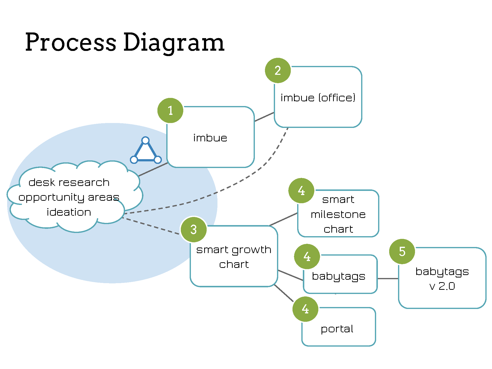
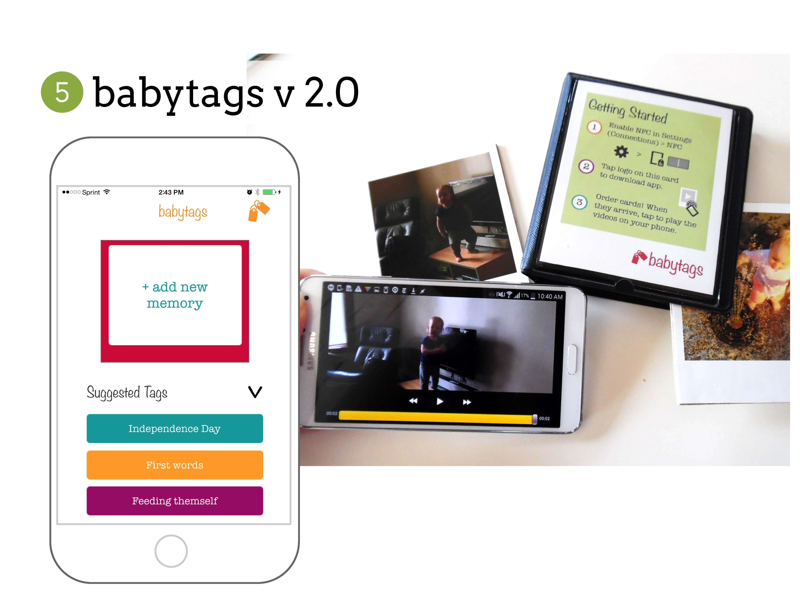

- 
-

- 
Project Prompt: Agile Design & IoT @ Home
As a process experiment for The MEME Design, our team of two engineer-entrepreneur-designers prototyped an "agile design process" for open-ended design work. Starting with the Internet of Things (IoT) in the home, we quickly narrowed on parents of young children and began an iterative ideating-prototyping process. Through canvassing in public parks and more formal interviews, we developed and tested 7 low-fidelity "acts-like" prototypes over 8 weeks.
Desk Research & Ideation
Drawing from the Meme's previous projects as well as original desk research into the existing marketspace and future trends, we saw three overarching themes of the IoT: life management, emotional-social connection, and interpersonal guidance.
From these themes, we extrapolated four opportunity areas: enabling and capturing spontaneous moments enabling personal growth & learning creating personalized spaces in shared spaces connecting with elderly relatives As we narrowed in on an opportunity area, and eventurally a product, to focus our efforts, our team sought to develop a product concept that accounted for the MEME's technical preference for app development, desire for a unique application of off-the-shelf technologies, and previous project experience.
LifeTags
The final product concept, LifeTags, is a product-service system that brings photos and videos out of the cloud and into a physical form, while maintaining smart organization and minimal clutter. Parents start by downloading the LifeTags app, either from the app store or tapping a LifeTags gift photo album. This tapping motion, driven by near-field communication (NFC), appears again once the parent orders a LifeTag photo. The polaroid-style photos include an embedded NFC tag that, when tapped, trigger related photos and videos that the parent attaches when ordering. Upon delivery to the parents and family members, all can enjoy and display the physical photo-object; tapping with a smartphone simply unlocks the related media for easy, intuitive reminiscence. Cue LifeTag toddlers everywhere, tapping and laughing at videos of themselves!
Our app mockups are available upon request. Email celine.ta@students.olin.edu for more information.Project Info
- Team Size: 2
- Interviews: 25
- Summer 2015
- Pitch Deck